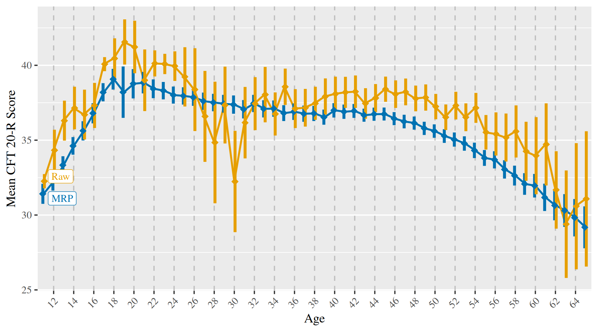

MRP vs. Traditional Norming
2023-11-01
knitr::opts_chunk$set(
message = FALSE,
warning = FALSE,
include = TRUE,
error = TRUE
)1 Load dependencies and preprocessed datasets
library(tidyverse)
library(ggrepel)
library(kableExtra)
library(brms)
library(tidybayes)
library(marginaleffects)
library(bayesplot)
load("../unshareable_data/preprocessed/tl.Rda")
load("../unshareable_data/preprocessed/manual_norms.Rda")
load("data/preprocessed/census.Rda")
sim_pop_sample_with_draws <- readRDS("data/simulated/sim_pop_sample_with_draws.rds")
options(scipen = 999,
digits = 4)
windowsFonts(Times = windowsFont("Times New Roman"))
theme_set(theme_gray(base_size = 14, base_family = "Times"))
# exclude first twins to avoid twin dependency issues and add variable containing the age groups from the manual
tl_no_1st_twins <- tl %>%
filter(ptyp != 1) %>%
mutate(age_group = case_when(
age0100 == 11 ~ '11',
age0100 == 12 ~ '12',
age0100 == 13 ~ '13',
age0100 == 14 ~ '14',
age0100 == 15 ~ '15',
age0100 == 16 ~ '16',
age >= 17 & age <= 19 ~ '17-19',
age >= 20 & age <= 24 ~ '20-24',
age >= 25 & age <= 29 ~ '25-29',
age >= 30 & age <= 34 ~ '30-34',
age >= 35 & age <= 39 ~ '35-39',
age >= 40 & age <= 44 ~ '40-44',
age >= 45 & age <= 49 ~ '45-49',
age >= 50 & age <= 54 ~ '50-54',
age >= 55 & age <= 59 ~ '55-59',
age >= 60 & age <= 64 ~ '60-64',
TRUE ~ NA_character_))2 MRP predictions vs. raw means
2.1 Average difference in means
means_sds_and_ses_MRP <- sim_pop_sample_with_draws %>%
group_by(age, .draw) %>%
summarise(mean_prediction = mean(.prediction),
sd_prediction = sd(.prediction)) %>%
group_by(age) %>%
summarise(MRP_mean = mean(mean_prediction),
MRP_se_of_mean = sd(mean_prediction),
MRP_sd = sqrt(mean(sd_prediction^2)),
MRP_se_of_sd = sd(sd_prediction))
means_sds_and_ses_tl <- tl_no_1st_twins %>%
group_by(age0100) %>%
summarise(Raw_n = n(),
Raw_mean = mean(cft, na.rm = T),
Raw_sd = sd(cft, na.rm = T),
Raw_se_of_mean = Raw_sd/sqrt(Raw_n)) %>%
rename(age = age0100)
means_ns_sds_and_ses <- census %>%
group_by(age) %>%
filter(age <= 65) %>%
summarise (census_n = sum(census_n)) %>%
left_join(means_sds_and_ses_MRP, by = c("age")) %>%
left_join(means_sds_and_ses_tl, by = "age") %>%
mutate(abs_dif = abs(MRP_mean - Raw_mean))
t.test(means_ns_sds_and_ses$Raw_mean, means_ns_sds_and_ses$MRP_mean)##
## Welch Two Sample t-test
##
## data: means_ns_sds_and_ses$Raw_mean and means_ns_sds_and_ses$MRP_mean
## t = 2.4, df = 108, p-value = 0.02
## alternative hypothesis: true difference in means is not equal to 0
## 95 percent confidence interval:
## 0.2283 2.1839
## sample estimates:
## mean of x mean of y
## 36.81 35.60On average a difference of ~ fifth of an SD between raw and corrected means.
2.2 Browsable table
Here you can browse both MRP and raw ns, means, SDs, and SEs.
means_ns_sds_and_ses %>% DT::datatable() %>% DT::formatRound(columns = names(means_ns_sds_and_ses)[-c(1, 2, 7)], digits = 2)2.3 Plot of means + 95% CIs
means_ns_sds_and_ses %>%
pivot_longer(-age, names_to = c("source", ".value"), names_pattern = "([^_]*)_(.*)") %>%
filter(source != "census" & source != "abs") %>%
ggplot(aes(x = as.factor(age), y = mean, group = source, colour = source)) +
geom_line(linewidth = 1) +
geom_pointrange(shape = 18,
aes(ymin = mean - 1.96*se_of_mean, ymax = mean + 1.96*se_of_mean),
fatten = 6,
linewidth = 1.5,
position = position_dodge(width = 0.3)) +
geom_label_repel(
data = means_ns_sds_and_ses %>% filter(age <= 65) %>% pivot_longer(-age, names_to = c("source", ".value"), names_pattern = "([^_]*)_(.*)") %>% filter(source != "census" & source != "abs") %>% group_by(source) %>% filter(age == 11),
aes(label = source, x = as.factor(age), y = mean, color = source), family = "Times", seed = 810) +
scale_x_discrete(breaks = seq(12, 79, by = 2)) +
theme(
axis.text.x = element_text(angle = 45, hjust = 1),
panel.grid.major.x = element_line(color = "gray", linetype = "dashed"),
panel.grid.minor.x = element_blank(),
text = element_text(family = "Times"),
legend.position = "none"
) +
scale_colour_manual(values = c("#0072b2", "#e69f00")) +
labs(x = "Age", y = "Mean CFT 20-R Score")
2.4 Plot of SDs
means_ns_sds_and_ses %>%
filter(age <= 65) %>%
pivot_longer(-age, names_to = c("source", ".value"), names_pattern = "([^_]*)_(.*)") %>%
filter(source != "census" & source != "abs") %>%
ggplot(aes(x = as.factor(age), y = sd, group = source, colour = source)) +
geom_line(linewidth = 1) +
geom_pointrange(shape = 18,
aes(ymin = sd - 1.96*se_of_sd, ymax = sd + 1.96*se_of_sd),
fatten = 6,
linewidth = 1.5,
position = position_dodge(width = 0.3)) +
geom_label_repel(
data = means_ns_sds_and_ses %>% filter(age <= 65) %>% pivot_longer(-age, names_to = c("source", ".value"), names_pattern = "([^_]*)_(.*)") %>% filter(source != "census" & source != "abs") %>% group_by(source) %>% filter(age == 11),
aes(label = source, x = as.factor(age), y = sd, color = source), family = "Times", seed = 810) +
scale_x_discrete(breaks = seq(12, 79, by = 2)) +
theme(
axis.text.x = element_text(angle = 45, hjust = 1),
panel.grid.major.x = element_line(color = "gray", linetype = "dashed"),
panel.grid.minor.x = element_blank(),
text = element_text(family = "Times"),
legend.position = "none"
) +
scale_colour_manual(values = c("#0072b2", "#e69f00")) +
labs(x = "Age", y = "CFT 20-R Score SD")
3 MRP norms vs. manual norms vs. raw means
Here we compare the MRP-based norms to the traditionally constructed norms reported in the CFT 20-R manual. We aggregate by the age groups as reported in the manual normal tables. Note that the manual means and SDs for ages 20 and older are based on the very same TwinLife sample we are using, they just use a different correction method that isn’t described in enough detail to make it reproducible for us.
3.1 Plots of means and SDs
means_sds_and_ses_MRP <- sim_pop_sample_with_draws %>% # the same one from above
mutate(age_group = case_when(
age == 11 ~ '11',
age == 12 ~ '12',
age == 13 ~ '13',
age == 14 ~ '14',
age == 15 ~ '15',
age == 16 ~ '16',
age >= 17 & age <= 19 ~ '17-19',
age >= 20 & age <= 24 ~ '20-24',
age >= 25 & age <= 29 ~ '25-29',
age >= 30 & age <= 34 ~ '30-34',
age >= 35 & age <= 39 ~ '35-39',
age >= 40 & age <= 44 ~ '40-44',
age >= 45 & age <= 49 ~ '45-49',
age >= 50 & age <= 54 ~ '50-54',
age >= 55 & age <= 59 ~ '55-59',
age >= 60 & age <= 64 ~ '60-64',
TRUE ~ NA_character_)) %>%
group_by(age_group, .draw) %>%
summarise(mean_prediction = mean(.prediction), sd_prediction = sd(.prediction)) %>%
summarise(MRP_mean = mean(mean_prediction),
MRP_se_of_mean = sd(mean_prediction),
MRP_sd = sqrt(mean(sd_prediction^2)),
MRP_se_of_sd = sd(sd_prediction)) %>%
filter(!is.na(age_group))
means_sds_and_ses_tl <- tl_no_1st_twins %>%
filter(!is.na(age_group)) %>%
group_by(age_group) %>%
summarise(Raw_n = n(),
Raw_mean = mean(cft, na.rm = T),
Raw_sd = sd(cft, na.rm = T),
Raw_se_of_mean = Raw_sd/sqrt(Raw_n))
means_sds_and_ses <- means_sds_and_ses_MRP %>%
left_join(means_sds_and_ses_tl, by = "age_group") %>%
left_join(manual_norms, by = "age_group")
# means and CIs
means_sds_and_ses %>%
pivot_longer(-age_group, names_to = c("provenance", ".value"), names_pattern = "([^_]*)_(.*)") %>%
filter(provenance != "census"
) %>%
ggplot(aes(x = age_group, y = mean, group = provenance, colour = provenance)) +
geom_line(linewidth = 1) +
geom_pointrange(shape = 18,
aes(ymin = mean - 1.96*se_of_mean, ymax = mean + 1.96*se_of_mean),
fatten = 6,
linewidth = 1.5,
position = position_dodge(width = 0.3)) +
scale_colour_manual(values = c("#009e73", "#0072b2", "#e69f00")) +
labs(x = "Age Group", y = "Mean CFT 20-R Score") +
geom_label_repel(
data = means_sds_and_ses %>%
pivot_longer(-age_group, names_to = c("provenance", ".value"), names_pattern = "([^_]*)_(.*)") %>% filter(age_group == "11"),
aes(label = c("MRP", "Raw", ""), x = age_group, y = mean, color = provenance), family = "Times", seed = 810) +
geom_label_repel(
data = means_sds_and_ses %>%
pivot_longer(-age_group, names_to = c("provenance", ".value"), names_pattern = "([^_]*)_(.*)") %>% filter(age_group == "14"),
aes(label = c("", "", "Manual, school sample"), x = age_group, y = mean, color = provenance), family = "Times", seed = 810, nudge_y = 2.5) +
geom_label_repel(
data = means_sds_and_ses %>%
pivot_longer(-age_group, names_to = c("provenance", ".value"), names_pattern = "([^_]*)_(.*)") %>% filter(age_group == "40-44"),
aes(label = c("", "", "Manual, TwinLife sample"), x = age_group, y = mean, color = provenance), family = "Times", seed = 810, nudge_y = -2.5) +
theme(
axis.text.x = element_text(angle = 45, hjust = 1),
panel.grid.major.x = element_line(color = "gray", linetype = "dashed"),
panel.grid.minor.x = element_blank(),
text = element_text(family = "Times"),
legend.position = "none"
) +
geom_vline(xintercept = 7.5)
# SDs
means_sds_and_ses %>%
pivot_longer(-age_group, names_to = c("provenance", ".value"), names_pattern = "([^_]*)_(.*)") %>%
filter(provenance != "census"
) %>%
ggplot(aes(x = age_group, y = sd, group = provenance, colour = provenance)) +
geom_line(linewidth = 1) +
geom_pointrange(shape = 18,
aes(ymin = sd - 1.96*se_of_sd, ymax = sd + 1.96*se_of_sd),
fatten = 6,
linewidth = 1.5,
position = position_dodge(width = 0.3)) +
scale_colour_manual(values = c("#009e73", "#0072b2", "#e69f00")) +
labs(x = "Age Group", y = "CFT 20-R Score SD") +
geom_label_repel(
data = means_sds_and_ses %>%
pivot_longer(-age_group, names_to = c("provenance", ".value"), names_pattern = "([^_]*)_(.*)") %>% filter(age_group == "11"),
aes(label = c("MRP", "Raw", ""), x = age_group, y = sd, color = provenance), family = "Times", seed = 810) +
geom_label_repel(
data = means_sds_and_ses %>%
pivot_longer(-age_group, names_to = c("provenance", ".value"), names_pattern = "([^_]*)_(.*)") %>% filter(age_group == "14"),
aes(label = c("", "", "Manual, school sample"), x = age_group, y = sd, color = provenance), family = "Times", seed = 810, nudge_y = -.5) +
geom_label_repel(
data = means_sds_and_ses %>%
pivot_longer(-age_group, names_to = c("provenance", ".value"), names_pattern = "([^_]*)_(.*)") %>% filter(age_group == "40-44"),
aes(label = c("", "", "Manual, TwinLife sample"), x = age_group, y = sd, color = provenance), family = "Times", seed = 810, nudge_y = .5) +
theme(
axis.text.x = element_text(angle = 45, hjust = 1),
panel.grid.major.x = element_line(color = "gray", linetype = "dashed"),
panel.grid.minor.x = element_blank(),
text = element_text(family = "Times"),
legend.position = "none"
) +
geom_vline(xintercept = 7.5)
3.2 IQ calculations
Rather than calculating IQs for all possible CFT 20-R scores (0-56), we restrict our calculations to those which occur in our data.
3.2.1 Linearly transformed IQs
iq <- function(cft_score, mean, sd) {
iq_score <- ((cft_score - mean) / sd) * 15 + 100
return(iq_score)
}
iqs_linear <- tl_no_1st_twins %>%
filter(!is.na(age_group)) %>%
group_by(age_group, cft) %>%
summarise(n()) %>%
select(age_group, cft) %>%
left_join(select(means_sds_and_ses, c(Manual_mean, MRP_mean, Manual_sd, MRP_sd, age_group)), by = "age_group") %>%
mutate(MRP_IQ_linear = round(iq(cft, MRP_mean, MRP_sd)),
Manual_IQ_linear = round(iq(cft, Manual_mean, Manual_sd)),
IQ_linear_dif = MRP_IQ_linear - Manual_IQ_linear,
IQ_linear_dif_abs = abs(MRP_IQ_linear - Manual_IQ_linear))3.2.2 Normalised (area transformed / normal rank transformed) IQs
iqs_normalised <- sim_pop_sample_with_draws %>%
mutate(raw_score = round(.prediction),
age_group = case_when(
age == 11 ~ '11',
age == 12 ~ '12',
age == 13 ~ '13',
age == 14 ~ '14',
age == 15 ~ '15',
age == 16 ~ '16',
age >= 17 & age <= 19 ~ '17-19',
age >= 20 & age <= 24 ~ '20-24',
age >= 25 & age <= 29 ~ '25-29',
age >= 30 & age <= 34 ~ '30-34',
age >= 35 & age <= 39 ~ '35-39',
age >= 40 & age <= 44 ~ '40-44',
age >= 45 & age <= 49 ~ '45-49',
age >= 50 & age <= 54 ~ '50-54',
age >= 55 & age <= 59 ~ '55-59',
age >= 60 & age <= 64 ~ '60-64',
TRUE ~ NA_character_)) %>%
filter(!is.na(age_group)) %>%
group_by(age_group, .draw) %>%
mutate(percentile = ecdf(raw_score)(raw_score)) %>%
mutate(iq_score_tr_ag = qnorm(percentile) * 15 + 100) %>%
group_by(age_group, raw_score) %>%
summarise(percentile = mean(percentile),
iq_score_tr_ag = mean(iq_score_tr_ag)) %>%
mutate(iq_score_tr_ag = ifelse(is.finite(iq_score_tr_ag), iq_score_tr_ag, NA),
iq_score_ag_tr = qnorm(percentile) * 15 + 100,
MRP_IQ_normalised = round(coalesce(iq_score_tr_ag, iq_score_ag_tr))) %>%
select(age_group, raw_score, MRP_IQ_normalised) %>%
rename("cft" = raw_score)3.2.3 Some aggregated comparisons between MRP and Manual IQs
iq_table <- iqs_linear %>%
left_join(iqs_normalised, by = c("age_group", "cft")) %>%
mutate(IQ_MRP_abs_dif = abs(MRP_IQ_linear - MRP_IQ_normalised),
Manual_kids_sample = ifelse(age_group %in% c("11", "12", "13", "14", "15", "16", "17-19"), TRUE, FALSE)) %>%
arrange(-IQ_linear_dif_abs)
mean(iq_table$IQ_linear_dif_abs)## [1] 4.445mean(iq_table$IQ_MRP_abs_dif)## [1] 1.506iq_table %>% group_by(Manual_kids_sample) %>% summarise(mean(IQ_linear_dif_abs))## # A tibble: 2 × 2
## Manual_kids_sample `mean(IQ_linear_dif_abs)`
## <lgl> <dbl>
## 1 FALSE 2.21
## 2 TRUE 7.764 Session info
sessionInfo()## R version 4.3.0 (2023-04-21 ucrt)
## Platform: x86_64-w64-mingw32/x64 (64-bit)
## Running under: Windows 10 x64 (build 19045)
##
## Matrix products: default
##
##
## locale:
## [1] LC_COLLATE=English_United Kingdom.utf8
## [2] LC_CTYPE=English_United Kingdom.utf8
## [3] LC_MONETARY=English_United Kingdom.utf8
## [4] LC_NUMERIC=C
## [5] LC_TIME=English_United Kingdom.utf8
##
## time zone: Europe/Berlin
## tzcode source: internal
##
## attached base packages:
## [1] stats graphics grDevices datasets utils methods base
##
## other attached packages:
## [1] bayesplot_1.10.0 marginaleffects_0.12.0 tidybayes_3.0.4
## [4] brms_2.20.4 Rcpp_1.0.10 kableExtra_1.3.4
## [7] ggrepel_0.9.3 forcats_0.5.2 stringr_1.5.0
## [10] dplyr_1.1.2 purrr_1.0.1 readr_2.1.3
## [13] tidyr_1.2.1 tibble_3.2.1 ggplot2_3.4.2
## [16] tidyverse_1.3.2
##
## loaded via a namespace (and not attached):
## [1] tensorA_0.36.2 rstudioapi_0.14 jsonlite_1.8.4
## [4] magrittr_2.0.3 estimability_1.4.1 farver_2.1.1
## [7] rmarkdown_2.21 fs_1.6.2 vctrs_0.6.2
## [10] base64enc_0.1-3 webshot_0.5.4 htmltools_0.5.5
## [13] distributional_0.3.2 curl_5.0.0 haven_2.5.1
## [16] broom_1.0.4 cellranger_1.1.0 googlesheets4_1.0.1
## [19] sass_0.4.6 StanHeaders_2.26.26 bslib_0.4.2
## [22] htmlwidgets_1.6.2 plyr_1.8.8 emmeans_1.8.7
## [25] zoo_1.8-12 lubridate_1.9.0 cachem_1.0.8
## [28] igraph_1.4.2 mime_0.12 lifecycle_1.0.3
## [31] pkgconfig_2.0.3 colourpicker_1.2.0 Matrix_1.5-4
## [34] R6_2.5.1 fastmap_1.1.1 shiny_1.7.4
## [37] digest_0.6.31 colorspace_2.1-0 ps_1.7.5
## [40] crosstalk_1.2.0 labeling_0.4.2 fansi_1.0.4
## [43] timechange_0.2.0 httr_1.4.5 abind_1.4-5
## [46] compiler_4.3.0 gargle_1.4.0 withr_2.5.0
## [49] backports_1.4.1 inline_0.3.19 shinystan_2.6.0
## [52] DBI_1.1.3 highr_0.10 pkgbuild_1.4.0
## [55] gtools_3.9.4 loo_2.6.0 tools_4.3.0
## [58] googledrive_2.0.0 httpuv_1.6.11 threejs_0.3.3
## [61] glue_1.6.2 callr_3.7.3 nlme_3.1-162
## [64] promises_1.2.0.1 grid_4.3.0 checkmate_2.2.0
## [67] reshape2_1.4.4 generics_0.1.3 gtable_0.3.3
## [70] tzdb_0.3.0 data.table_1.14.6 hms_1.1.2
## [73] xml2_1.3.3 utf8_1.2.3 ggdist_3.2.1
## [76] pillar_1.9.0 markdown_1.6 posterior_1.4.1
## [79] later_1.3.1 lattice_0.20-45 renv_0.17.3
## [82] tidyselect_1.2.0 miniUI_0.1.1.1 knitr_1.42
## [85] arrayhelpers_1.1-0 gridExtra_2.3 V8_4.3.0
## [88] svglite_2.1.1 stats4_4.3.0 xfun_0.39
## [91] bridgesampling_1.1-2 matrixStats_0.63.0 DT_0.28
## [94] rstan_2.26.22 stringi_1.7.12 yaml_2.3.7
## [97] evaluate_0.21 codetools_0.2-19 cli_3.6.1
## [100] RcppParallel_5.1.7 shinythemes_1.2.0 xtable_1.8-4
## [103] systemfonts_1.0.4 munsell_0.5.0 processx_3.8.2
## [106] jquerylib_0.1.4 modelr_0.1.11 readxl_1.4.1
## [109] dbplyr_2.3.0 coda_0.19-4 svUnit_1.0.6
## [112] parallel_4.3.0 rstantools_2.3.1 ellipsis_0.3.2
## [115] assertthat_0.2.1 prettyunits_1.1.1 dygraphs_1.1.1.6
## [118] reprex_2.0.2 Brobdingnag_1.2-9 viridisLite_0.4.2
## [121] mvtnorm_1.1-3 scales_1.2.1 xts_0.13.1
## [124] crayon_1.5.2 rlang_1.1.1 rvest_1.0.3
## [127] shinyjs_2.1.0